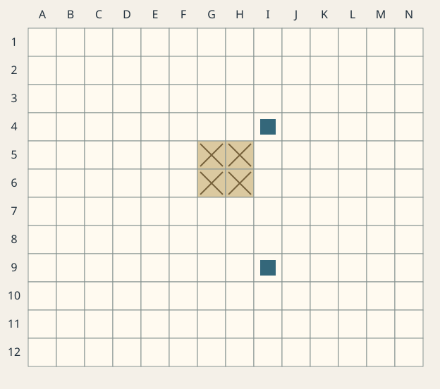

Одинаковые правила, разная история
Все карты совпадают с сеткой нативного пакета: 14 × 12, клетка — 5 футов. G5/H5/G6/H6 — трудная местность; I4/I9 — половинное укрытие. Остальные детали описания декоративны, пока ведущий не изменил поле штатно.
Расстановка и параметры
Герои по порядку: B3, B4, B5, B6, C3, C4, C5. Противники: L3, L4, L5, L6, M3. Используйте только нужное число фигур.
Для 3 / 4 / 5 / 6 / 7 игроков: 2 / 3 / 3 / 4 / 5 противников, здоровье каждого 12 / 14 / 16 / 18 / 20. Защита 12; скорость 20 футов; одна ближняя атака +3, 1d4+1 дробящего урона, досягаемость 5 футов.
Враги — простая поддерживаемая модель. Мирные решения и ограничения сцены описаны отдельно; ведущий подтверждает их результат. После первого раунда напомните пути переговоров или отступления. Встречи не запускаются автоматически.
Штурм плюшевой высоты
Только если игроки прямо выберут предложенную Лидой реквизитную игру во втором вечере. Не включать бой из-за отказа Марка изображать исследователя.
Цель и выходы
Добровольно попробовать сценический штурм и вывести мягкие фигуры из игры обычными действиями боя; затем придумать смешное название достигнутой высоте. Улик, внимания Алины и права пройти наверх не разыгрывают. Любой участник может уйти по свободному обходу или попросить закончить упражнение.
Лида может показать спящее чучело и позволить придумать надпись на шляпе. Прогулка, карта и разговоры доступны полностью. Для окончания уже начатой игры достаточно ясного «стоп»; никто не требует победы или оправдания.
Поведение противников
Зачарованное набивное чучело в огромной пробковой шляпе, вооружённое мягкой указкой. Это реквизит, а не настоящий человек; способности остаются каноническими характеристиками подготовленного противника.
Фигуры подходят к ближайшему добровольному участнику и используют только обычную атаку ближнего боя +3, урон 1d4+1; AC 12. Они не преследуют вышедших и не блокируют настоящую лестницу. Обычные правила боя и HP героев сохраняются, без новой системы «усталости». Просьбу остановить игру ведущий разрешает в истории выключением реквизита.
Размер группы
3 игрока: 2 фигуры по 12 HP; 4: 3 по 14 HP; 5: 3 по 16 HP; 6: 4 по 18 HP; 7: 5 по 20 HP. У всех AC 12, одна атака ближнего боя +3 за действие, урон 1d4+1. На большой группе чередуйте внимание фигур, не добавляйте скрытых атак. Награда только добровольная шутка и общий опыт.

↔ На узком экране прокрутите карту вбок. Полный размер доступен по ссылке ниже.

Поле 14×12, столбцы A–N, строки 1–12. Только G5, H5, G6, H6 — труднопроходимые клетки с мягкими сценическими подушками; только I4, I9 — клетки с половинным укрытием за низкими реквизитными щитами. Все остальные клетки обычные, прочие шляпы, флажки и рисунок ступеней декоративны. Герои начинают B3, B4, B5, B6, C3, C4, C5; противники L3, L4, L5, L6, M3 по числу участников. Настоящая лестница находится вне игровой площадки; поле не имеет опасного края.
Танец кольценосцев
Только по желанию стола попробовать шуточную сцену великана в четвёртом вечере, после объяснения реквизитного назначения кольца. Никаких романтических наград или наказаний.
Цель и выходы
Вывести из игры мягких кольценосцев обычными действиями и, если хочется, собрать пять дуг на столе после боя. Выигрыш не означает помолвки и не влияет на ответ Полины. Выйти из игры, прекратить её словом или перейти к обычной демонстрации можно в любой момент.
Лида раскладывает пять дуг на подушках; герои могут собрать большое кольцо вместе с ней или просто прочесть карточку реквизита. При остановке фигуры прекращают игру по решению ведущего. Все улики и личные разговоры доступны независимо от выбора.
Поведение противников
Набивная реквизитная фигура с подушкой вместо щита и очень маленьким нарисованным усом. Имена, возраст и человеческие чувства ей не приписываются.
Кольценосцы по очереди подходят к ближайшим участвующим героям и делают одну обычную атаку мягкой указкой: +3, 1d4+1, AC 12. Не хватают, не заставляют надевать кольцо и не получают новых действий ради сюжета. Сборка кольца после боя — отдельная ручная сцена ведущего, не автоматическая боевая механика.
Размер группы
3 игрока: 2 фигуры по 12 HP; 4: 3 по 14 HP; 5: 3 по 16 HP; 6: 4 по 18 HP; 7: 5 по 20 HP. AC 12, одна атака +3 в ближнем бою за действие, урон 1d4+1. Не усиливайте игру ради отказавшегося участника; он может вести сцену с карточкой в параллельном коротком кадре.
↔ На узком экране прокрутите карту вбок. Полный размер доступен по ссылке ниже.

Сетка 14×12, A–N и 1–12. Только G5, H5, G6, H6 являются труднопроходимыми: там лежат мягкие декоративные дуги. Только I4, I9 дают половинное укрытие за игровыми щитами. Остальные клетки обычные; диван на рисунке, ширмы, подушки и камень кольца не дают дополнительных эффектов. Старт героев B3, B4, B5, B6, C3, C4, C5; старт противников L3, L4, L5, L6, M3 согласно размеру группы.
Гусиный караул
Лида предлагает добровольную игру с плюшевыми гусями в седьмом вечере. Настоящие личные вещи возвращаются до предложения; гуси охраняют только пустую реквизитную корону.
Цель и выходы
Вывести гусей из игры обычными действиями боя и придумать достойное место для пустой короны. Любой может выйти на свободную скамью, остановить упражнение или предложить гусям воображаемый отпуск. Корона ничего не даёт в отношениях, финале или доступе к багажу.
Можно рассказать гусям короткую выдуманную историю, выбрать им шляпы или попросить Лиду оставить их выключенными. Результат равноценен: гости забирают личные вещи, смотрят ленты и продолжают подготовку отъезда. Отступление не теряет улик и не вызывает насмешек NPC.
Поведение противников
Мягкий зачарованный гусь в просторном жилете, который во время паузы смотрит на собственную нашивку. Его удары — канонические атаки подготовленного противника с комедийным описанием.
Гуси идут к ближайшим добровольным участникам и используют только атаку ближнего боя +3 за действие, урон 1d4+1; AC 12. Не удерживают людей и не уносят предметы. Не вводите таймеры, особое оглушение, кражу или автоматическое перемещение. Остановка игры разрешается ведущим в истории.
Размер группы
3 игрока: 2 гуся по 12 HP; 4: 3 по 14 HP; 5: 3 по 16 HP; 6: 4 по 18 HP; 7: 5 по 20 HP. Всегда AC 12, одна атака +3 в ближнем бою за действие, урон 1d4+1. Не ставьте романтический ответ или возврат вещи в зависимость от исхода; для 6–7 участников дайте каждому короткий собственный момент.
↔ На узком экране прокрутите карту вбок. Полный размер доступен по ссылке ниже.

Поле 14×12: A–N, 1–12. Только G5, H5, G6, H6 — труднопроходимые клетки с мягким игровым ковром; только I4, I9 — клетки половинного укрытия за низкими реквизитными щитами. Все прочие клетки обычные; нарисованные перья, скамья и корона декоративны. Герои B3, B4, B5, B6, C3, C4, C5; противники L3, L4, L5, L6, M3 по нужному количеству. Никаких дополнительных препятствий без отдельного редактирования ведущим настоящего поля.